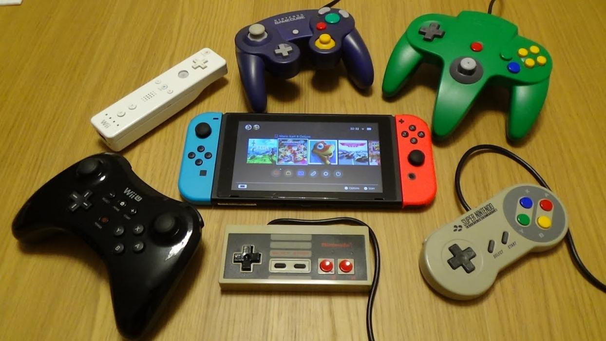

| Imagen | Información | Descripción | Calificación | ||||||
|---|---|---|---|---|---|---|---|---|---|
|
|||||||||
| título: | Street Fighter II: The World Warrior | Es un videojuego de lucha originalmente lanzado para arcade en 1991. Es la segunda entrega de la saga Street Fighter y la secuela del original Street Fighter publicado en 1987. Primer juego de la serie Street Fighter en alcanzar fama mundial e iniciador del fenómeno de los videojuegos en el género de la lucha. Desarrollado por la empresa Capcom. En esta saga introdujo una velocidad de juego más lenta y cuenta con 8 personajes a elegir, 4 jefes finales y un final diferente por cada personaje. A su vez, poseía un control que, al igual que su antecesor, utiliza combinaciones de la palanca y 6 botones para ejecutar ataques especiales durante la pelea, como el lanzamiento de bolas de fuego (abajo, diagonal abajo-adelante). | ⭐ | ||||||
| Género: | Videojuego de pelea | ⭐⭐⭐ | |||||||
| Diseñadores: | Akira Nishitani y Akira Yasuda | ⭐⭐⭐⭐ | |||||||
| Desarrollador | Capcom | ⭐⭐⭐⭐⭐ | |||||||
| Fecha de publicación: | febrero de 1991 | ⭐⭐⭐⭐⭐⭐ | |||||||
| Compatibilidad: | Super Nintendo, Arcade, Android, Game Boy, ect | ⭐⭐⭐⭐⭐⭐⭐ | |||||||
The Legend of Zelda: Ocarina of Time no es únicamente uno de los mejores juegos de la historia, es un
candidato firme y constante a ser el mejor de todos. A fin de cuentas, es el juego ante el que se miden
todos los Zeldas y, por extensión, cualquier otro título de aventuras. Pero ¿qué lo hace tan especial?
Lanzado originalmente en 1998, Zelda: Ocarina of Time estaba llamado a ser el caballo de batalla de Nintendo
y la N64. Así lo entendieron todos los que presenciaron la primera beta del conocido como Zelda 64 tres años
antes. La realidad, por otro lado, es que por entonces ni los creativos de La Gran N tenían claro cómo iba a
ser el debut del Héroe de Hyrule en aquella bestia de 64 bits.
Es más, Nintendo estaba aprendiendo sobre la marcha, a base de ensayo y error, a hacer juegos en entornos
tridimensionales. Lo que no sospechaban desde Kioto es que acabarían marcando las pautas de los juegos
venideros, no solo por el modo de sumergir al jugador en las sensaciones de aventura, sino por el poso que
Ocarina of Time ha dejado en el arte y la ciencia de hacer videojuegos.
Y, sobre todas las cosas, el fascinante viaje de Link de niño a adulto. Como comentó Shigeru Miyamoto
(creador de The Legend of Zelda o Super Mario Bros.) Al principio del juego uno ve el mundo a través de los
ojos de un niño, convirtiéndose en un lugar muy diferente al llegar a la edad adulta.
En este aspecto, el tema principal de Ocarina of Time también podía ser perfectamente una analogía del estado
de madurez por el que estaba pasando la industria del videojuego, pero también la de los jugadores que habían
crecido con las consolas y juegos de la propia Nintendo.
¿Casualidad? Dicen que la coincidencia es una ilusión y. como verás a continuación, el talento y la pasión
por hacer juegos al estilo Nintendo marcaron la diferencia ante lo desconocido, que fue mucho. Lo cual no
quita, por otro lado, que Miyamoto y su equipo también deseaban hacer, como veremos más abajo, un Zelda de
capa y espada.